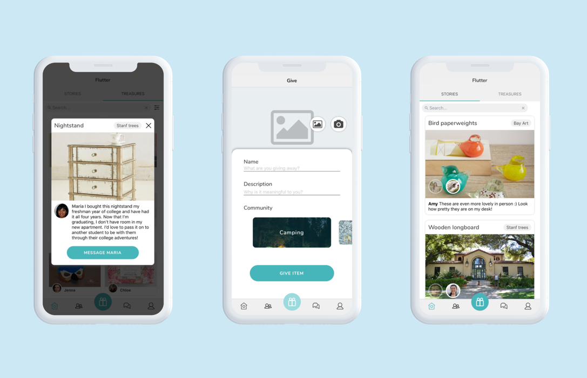
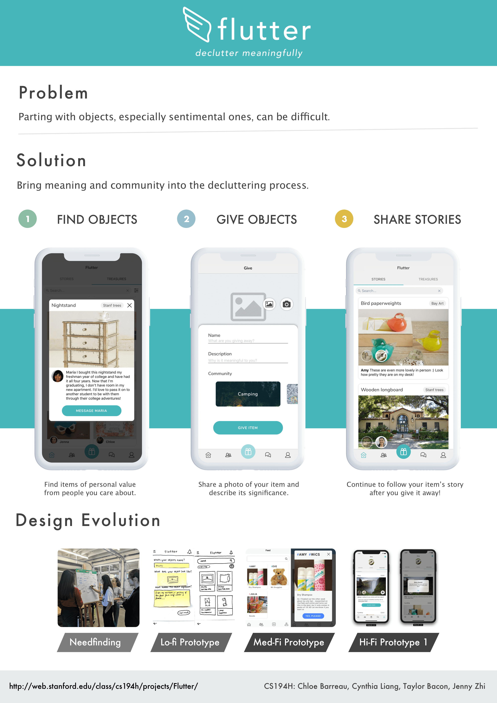
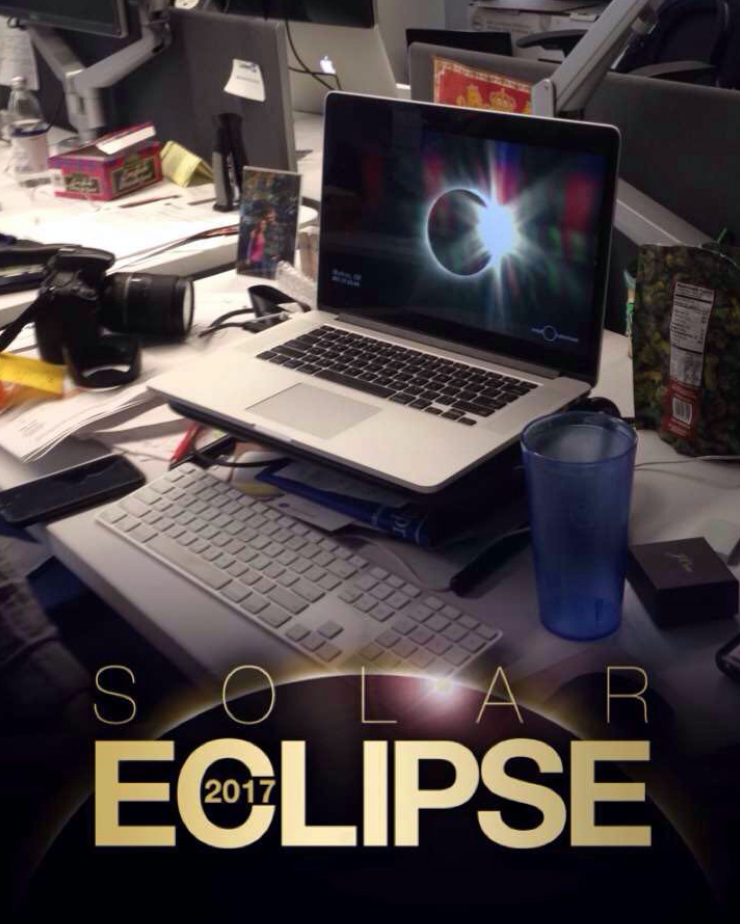
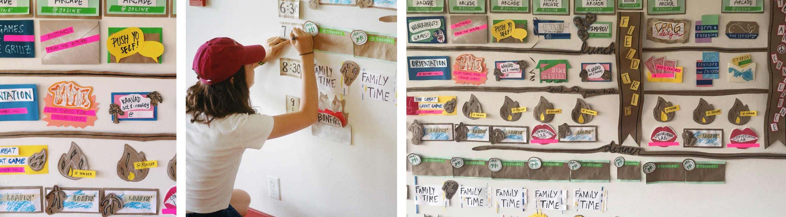
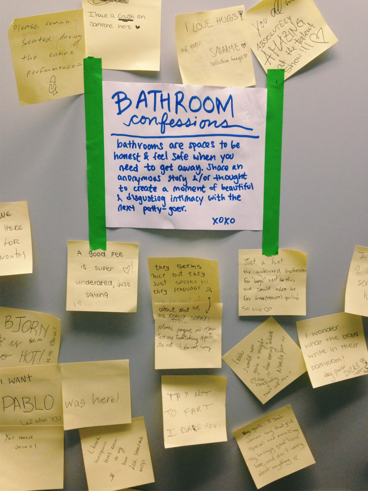
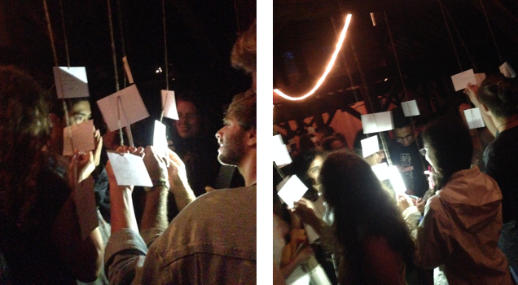
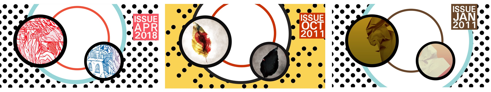

×
SPEED TESTS WITH PYTHON
Created a program that collected performance data (page load time, page size, TTFB, number of requests/resources) from 15 locations around the world into an exportable CSV file.
PURPOSE
Websites in the West are often not optimized for China and vice versa. The speed tests demonstrate the discrepancy, which was beneficial for the startup I was interning with, Notey. Notey is creating a product that automatically converts Western resources to the Chinese equivalent (e.g. Google Maps to Baidu Maps, YouTube to YouKu etc).
CHALLENGES
For a while I couldn't understand why I was reading incomplete JSON data and looked into more complicated solutions, such as polling. When I reverted, I realised I just needed to give the API more time (longer delay). This project taught me a couple of things 1) Yes, I was only two days into Python, but I should trust my instincts before overcomplicating things. 2) Extensively test so that there are no assumptions 3) Python is very easy to read, but lower level languages are more explicit and I was midly nostalgic when wanting to pass by reference.
TAKEAWAYS
Learned how to send data over the Internet with HTTPs and APIs, picked up Python (new language for me, could be picked up quickly, and was optimal for data science), delved into multithreading, and gained more practical experience with DevTools.

×
FLUTTER MOBILE APP
Collaborated with three Stanford students to create Flutter, a mobile app dedicated to decluttering meaningfully. Utilised React Native, Expo, Firebase, and Figma. This project was built in CS147 and CS194H.
PURPOSE
We are often reluctant to declutter because objects hold sentimental value. Flutter makes the process of giving items easy, social, and emotionally rewarding. Through closed, tight-knit communities, we systematically encourage receivers of treasured objects to share their side of the story.
TAKEAWAYS
Working in a team introduced me to the basics of github and the value of programming in a way that is clean and accessible to others. I enjoyed seeing a mobile app come to life from sketches to a published app. I particularly valued making design decisions and seeing how they would evolve when implemented and tested.

×
REBOOT
Co-led a charitable organisation that donates refurbished laptops and teaches computer literacy to under privileged single mothers in Sham Shui Po, Hong Kong. Coordinated regular volunteer sessions, laptop collections, fund raising, educational materials, e-waste recycling. Awarded funding and mentorship through an external incubator, Jockey Club MaD Accumulator Scheme Grant.
PURPOSE
During a time of technological innovation, it is important to uplift communities that are currently behind. The motivation behind this project was to help bridge the technological gap, so that progress is collective.
TAKEAWAYS
Explaining concepts such as the internet, social media and email in the simplest of terms challenged me to re-conceptualise my interactions with, and undersanding of, technology. Breaking down the intuition behind every graphical user interface revealed to me the importance of design in increasing accessibility.

×
INTERNSHIP WITH SENTIENT TECHNOLOGIES
Under the marketing department, I analysed the artificial intelligence company's e-commerce personalization and web design optimization products.
PURPOSE
Sentient's AI applications are advanced compared to traditional A/B testing and text-based product recommendation systems. As a result, it was especially important to identify competitors and target customers.
TAKEAWAYS
Conducting market research and competitor analysis for the first time exposed me to many new resources (Gartner, crunchbase, research databases etc). I gained a better understanding of Sentient's evolutionary AI algorithms, as well as how larger startups are run. "Seek, and you shall find" rang so so true. Meetings with researchers, engineers, PMs, and execs led to conversations ranging from the future of retail to patents, career paths and ethics.
this was also quite exciting

×
GAKKO EXPERIENTIAL LEARNING
Gakko organises summer experiences around the world for high school students. As a Gakko Sempai, I worked with seven other teachers to create a cohesive camp experience for 42 students. Spent two weeks in New York brainstorming, testing, and planning, before arriving in the Berkshires.
TAKEAWAYS
I learned to embrace surprise, not just the surprise I created for others. Many of the students were my age and the teachers I worked with were 5-10 years older than me. Although I had expected at least a couple teachers to still be in university, I was excited to be in a diverse crowd. Once camp commenced I had to face the complexity of being an authority-figure-but-also-relatable-teen. It was an unexpected gift that forced me to re-evaluate my sources of confidence and helped me cultivate parts of myself that I have brought beyond camp.
It was also exciting to see how meanginful experiences could be created in less than a day and with the simplest of resources if approached with the right energy (like priming canvas!).
LIVING SCHEDULE
why make boring schedules?
BATHROOM CONFESSIONS
hygenic expression (?)
MOMENTS
On the last day, students wrote down their favorite camp moments. This space was created to reflect on, and say goodbye to, the people and place we had come to know.

×
GRAPHIC DESIGNER @ASYMPTOTE JOURNAL
Asymptote is an online literary magazine dedicated to translations of world literature. I work as a graphic designer alongside the Editor-in-Chief.
As a half-Chinese, half-French American who has followed Asymptote since working on translation projects in high school, designing for the journal has been a dream come true.
TAKEAWAY
Beyond witnessing the full potential of Trello (project management tool) with this massive journal, i've practiced catering to new audiences, collaborating with fellow designers and making use of creative constraints.
30 Days 30 Issues Campaign
The #30days30issues campagin required designing a template that would be flexible enough to use for 30 different cover images. The aim was to be cohesive, whilst having enough variance to maintain interest. I achieved this by deconstructing and playing with circles.
